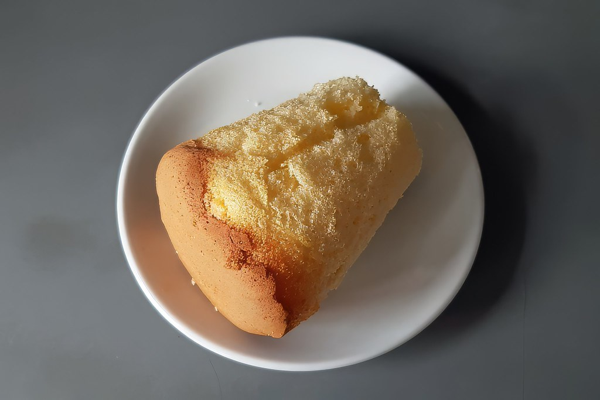
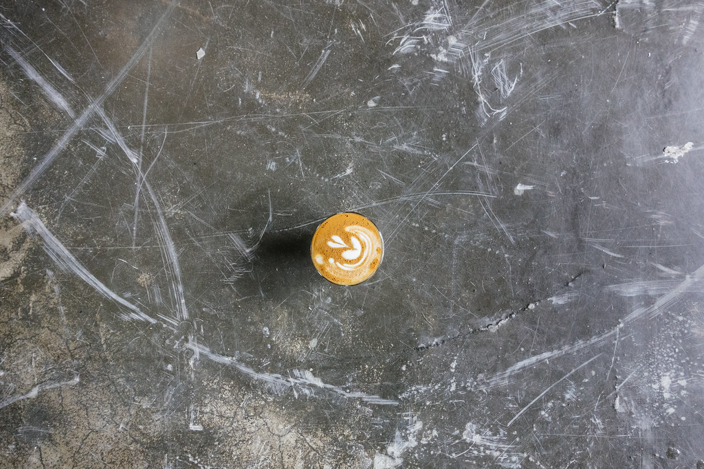
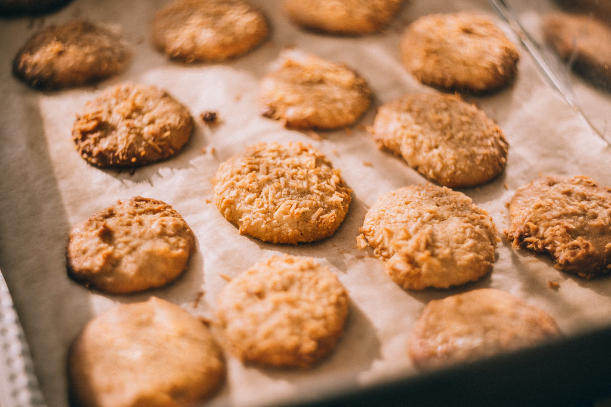

シフォンケーキ
Cafe Batakeで「絶品」と評判なのが、このシフォンケーキです。
しっとりとした生地はオーナーの手焼き。何度も食感を確かめながら仕上げています。
お茶うけにはもちろん、テイクアウトでご自宅用にもおすすめです。
※価格は貴店確認の上掲載します
Cafe Batakeの看板は、オーナーが一つひとつ手作りするケーキです。
店内でごゆっくりお召し上がりいただくのはもちろん、テイクアウトでのご購入も承っております。


カフェラテは、牛乳そのものの甘みを活かした味わい。砂糖を入れなくても美味しいと評判です。
コーヒーは香りの良さが好評で、ケーキとの相性も抜群です。

シフォンケーキ・プリン・バスク風チーズケーキのほか、クッキーなどの焼き菓子も好評です。
そのほかの焼き菓子もご用意がございます。詳しくは店頭にてご案内いたします。
Cafe Batakeのケーキは、テイクアウト(持ち帰り購入)も可能です。
ご来店前にお電話でのご確認もおすすめです。